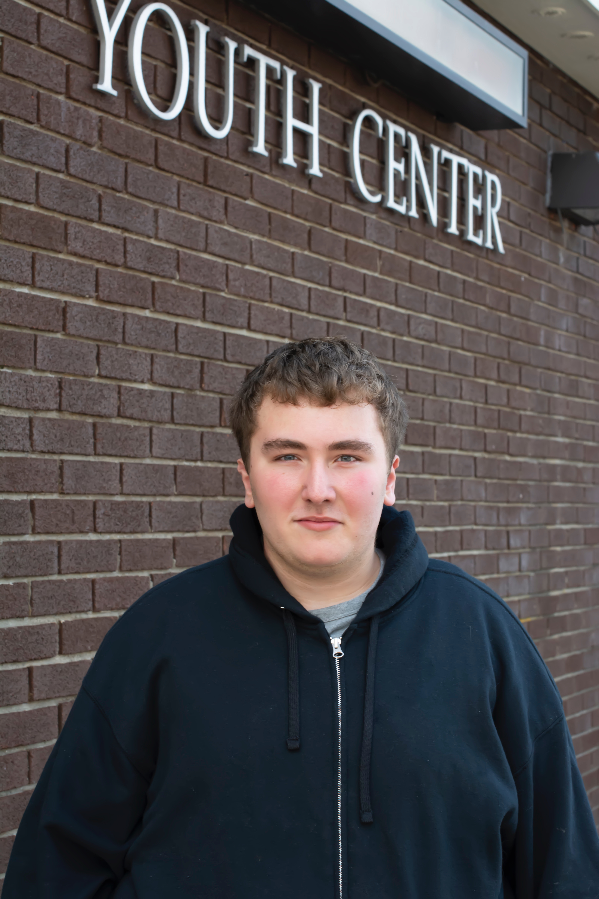

Youth of the Year Journey

A mainstay of the Boys & Girls Club Experience, Youth of the Year is a year-round program that helps young people develop the necessary leadership tools and character traits to be successful now and productive, caring, responsible adults in the future. Becoming National Youth of the Year is an exciting and inspiring journey. Starting at the local level, Club members of all ages are encouraged to participate in the leadership program and in a rigorous application process. Local judges select one teen to serve as each Club organization’s Youth of the Year. Each Club Youth of the Year goes on to participate in the state event. Military and non-military state Youth of the Year move on to regional events. Six teens, including five regional Youth of the Year and the military Youth of the Year, advance to Washington, D.C., for the National Youth of the Year Gala and Celebration Dinner, where one outstanding young person is named Boys & Girls Clubs of America’s national teen spokesperson.
2019 MA Youth of the Year

When asked to talk about her experience, Jacqueline shared the following. “I could not be more proud to represent this state and my fellow Boys & Girls Club members in the Youth of the Year program. The Club has been a place where I do not have to be strong all of the time. It is a place where I can enter having an awful day and exit with a smile on my face.”
Jacqueline currently attends Wellesley College.
Defining Characteristic: Unrelenting resolve
Years as a Member: 6
Field of Study: Political Science
Career Interest: Political Journalist
2019 MA Youth of the Year

When asked to talk about his Club experience, Zackary shared the following. “I started to attend the Boys & Girls Club on base. I made connections with the kids and most importantly the staff. I was encouraged to reach my full potential and provided with opportunities to flourish. This was one of the first places I had been to that truly accepted me for me. I was not bullied, put down or treaded any differently because of my differences. The Club built up my confidence and provided me with significant leadership skills.”
Zachary currently attends Bedford High School.
Defining Characteristic: Dedicated, Optimistic
Preferred College: Boston University
Years as a Member: 6
Field of Study: Medicine
Career Interest: Radiology/ Medical Technician
The National Youth of the Year serves as the voice of nearly four million Club youth and Boys & Girls Clubs of America’s teen spokesperson, educating millions of Americans about the power of the Club Experience, and elevating key issues facing kids and teens. The National Youth of the Year’s duties can include appearing at regional and national events, serving as a media spokesperson and teen thought leader, and meeting with political, corporate and community leaders. Continuing decades of tradi-tion, the National Youth of the Year and regional finalists also meet with the President of the United States in the Oval Office.
The Youth of the Year recognition program is presented by Disney, which has supported BGCA for more than 50 years, empowering young people to reach their full potential and providing youth with access to the tools they need to build the great futures they imagine. Toyota, the Signature Sponsor of Youth of the Year, is committed to helping improve the quality of life in our communities, and has demonstrated a strong commitment to ensuring youth have access to a quality education. Through the generous support of the Youth of the Year sponsors, participants are awarded scholarships to help them further their educations.